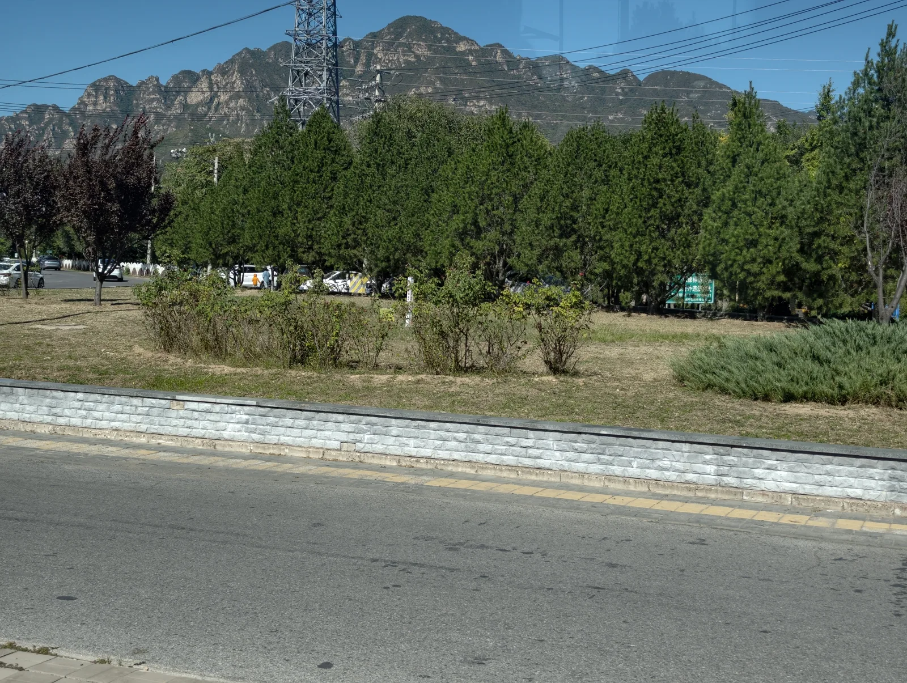
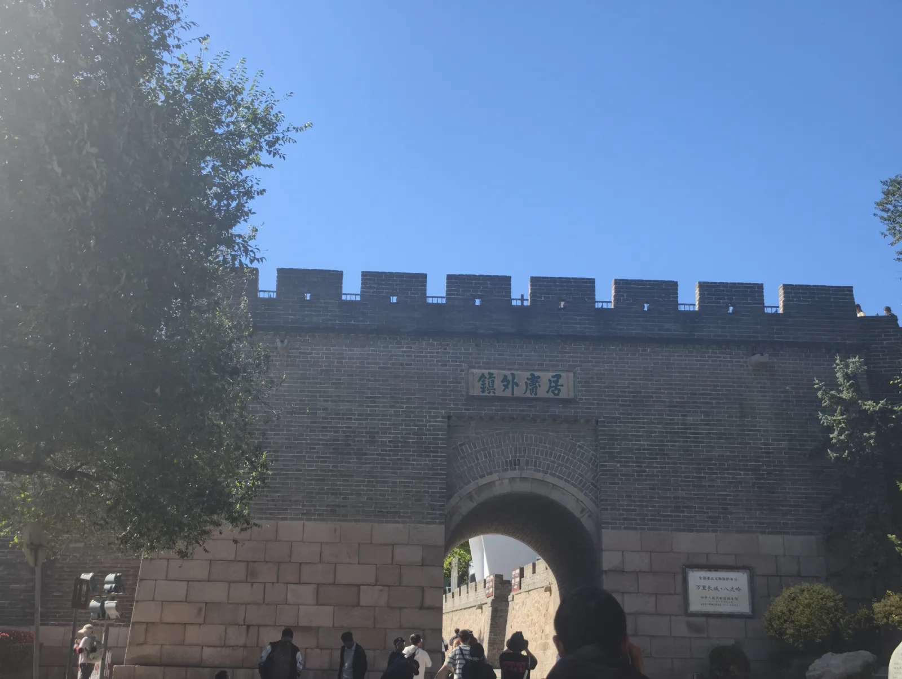
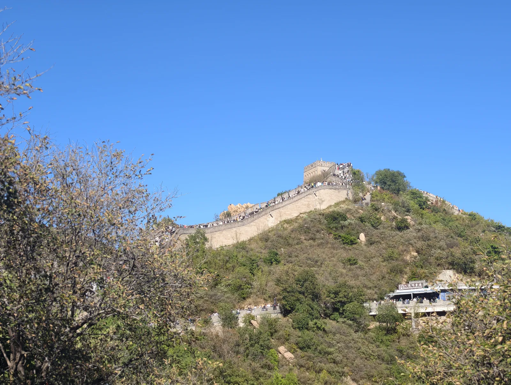
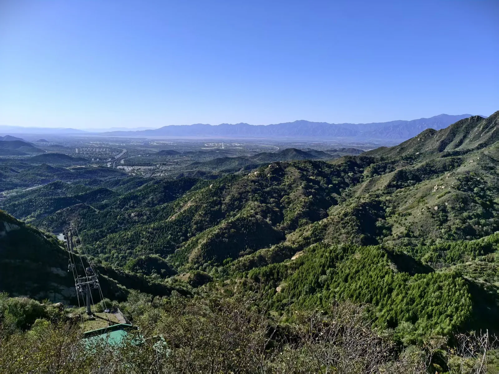
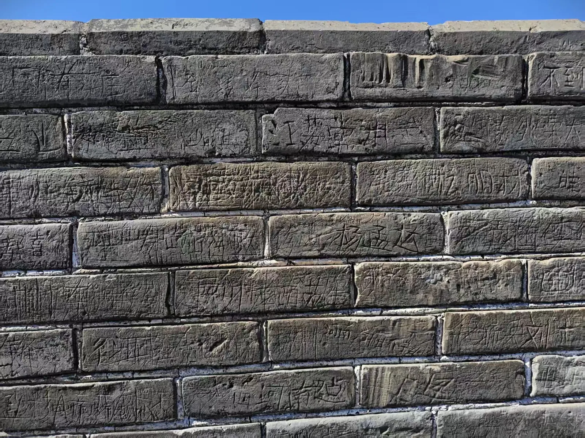
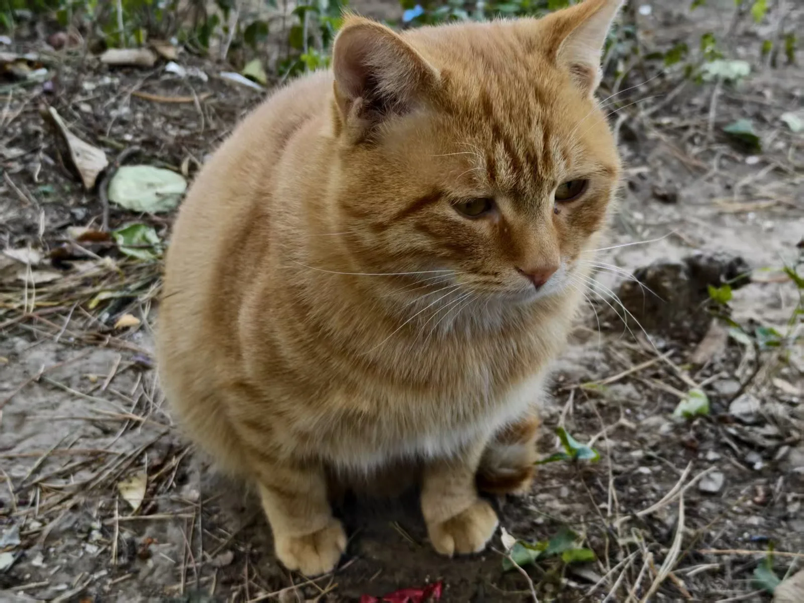
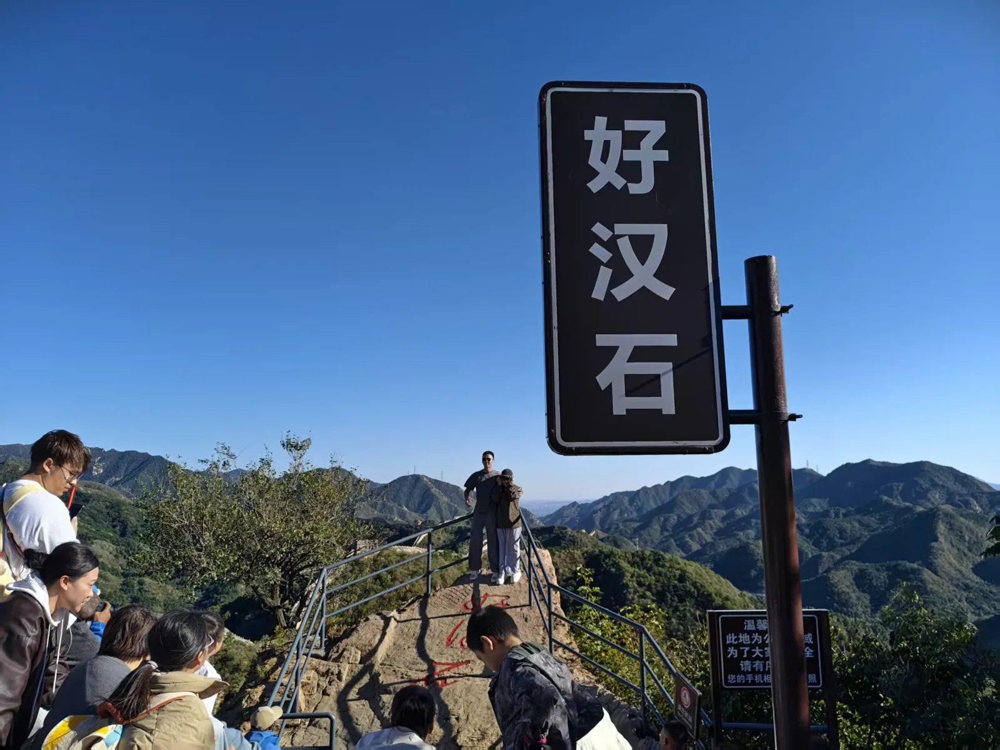

去程
想不到八达岭离石油大学还有30公里
转了两趟公交。第二趟公交本来想坐919的，但是879是直达。于是就做了879，但是没想到879要在村里面逛，以至于浪费了很长的时间，加上堵车。从11点出发，到达目的地接近2点了。

登城
然后我们吃了鸡肉串，买了奶茶，就开始了攀登

接下来就是持续不断的攀登，好大的风

快到顶的时候，山下的风景很好，一览无余

可惜的是城墙被很多游客刻上了名字。好在这段长城经过后面修缮的

下山
爬了大概两个小时，我们就开始下山，在路上碰到了一只肥猫

以及很多人拍照排队的好汉石

最后我们随机泊车来到919路公交。最后回到了学校。
回望
10月1号爬长城，人不是很多，主要是风太大了，比较影响爬山的感觉。八达岭长城是修缮过后的一段。路上还看到未曾修缮的城墙，已是残垣断壁，隐匿于群山之中。
游于 2026年10月1日返回行走与随笔 ↗